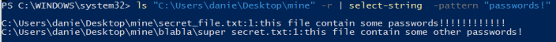

Select-String (sls)
Select-String (sls)
Select-String has alias sls, with it is possible to:
• search in files
example
select-string -path "C:\Users\danie\Desktop\mine\*.txt" -pattern "pass*"

• search recursively
example
ls "C:\Users\danie\Desktop\mine" -r | select-string -pattern "pass*"

l